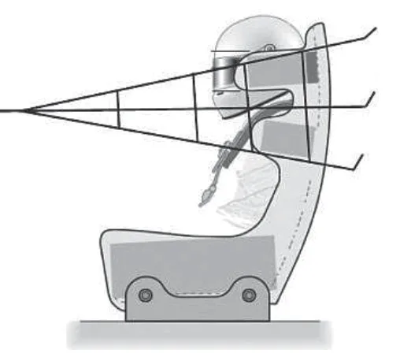
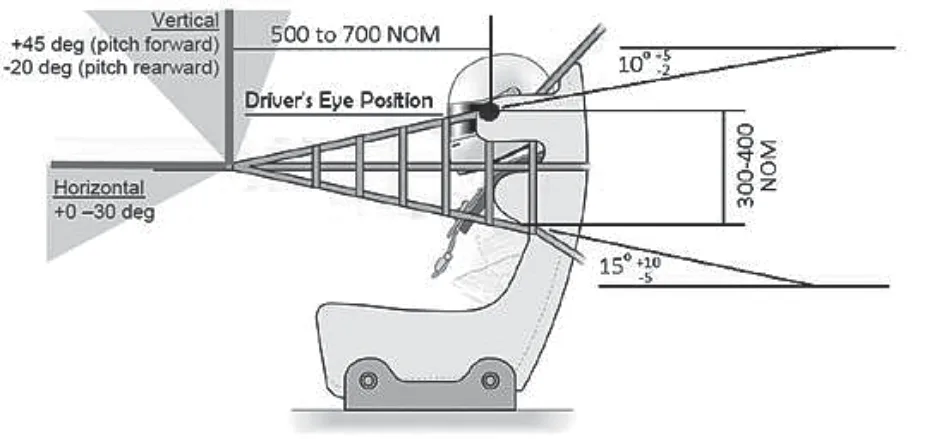
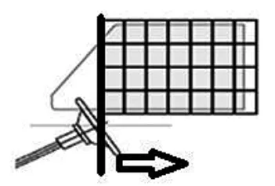

第1編第4章公認車両および登録車両に関する安全規定第22条に規定されるネットの取付方法に係る指導要綱
JAF の公式サイトではありません。JAF が公開する PDF を自動変換した非公式の検索用アーカイブです。記載内容は必ず JAF の原本 PDF で出典をご確認ください。
P.1第1編第4章公認車両および登録車両に関する安全規定第２２条に基づくネット取付に関する指導要綱
レース競技では国内競技車両規則第１編 第４章公認車両および登録車両に関する安全規定第２２条に準拠したネットを、本要綱に従い車両へ取り付けること。
１．対象となるネット
１）ＦＩＡ規格８８６３－２０１３に準拠し、FIA公認を取得したネット（図１）
（テクニカルリストＮｏ.４８に記載されるもの）
ＦＩＡ規格８８６３－２０１３に準拠したネットの例（図１）

２）第４章公認車両および登録車両に関する安全規定 第22条に規定される仕様を満たしたネット
２．適用車両
１）ＦＩＡ－ＧＴ３規格以上の車両
１項１）に規定されるネットを装着しなければならない。
なお、車両への取付は車両公認書等に従うこと。
２）１）以外の車両
１項１）または２）に規定されるネットのいずれかを着座した運転席の車体窓側に装着しなければならない。（着座した運転席の車体内部側（車体中央側）への装着は任意）なお、車両への取付は下記に準拠すること。
（１）１項１）に規定されるネット
図２を参照の上、取り付けるものとする。
１項１）に規定されるネットの取付け例（図２）

参照：ASN Safety Bulletin ＃16
racing_nets_installation_specification_v8.pdf
（２）1項２）に規定されるネット
サイドウィンドウ正面から見てステアリングホイール中心より後方のフロントサイドウィンドウをすべて覆うこ
P.2と。（図３）
1項２）に規定されるネットの取付け例（図３）
